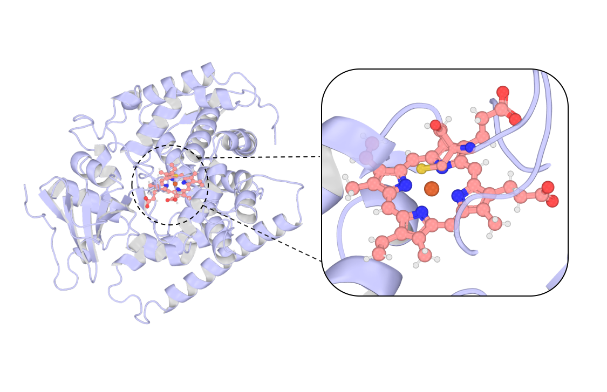
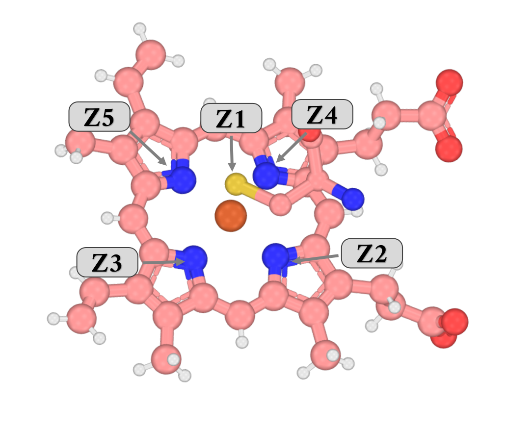
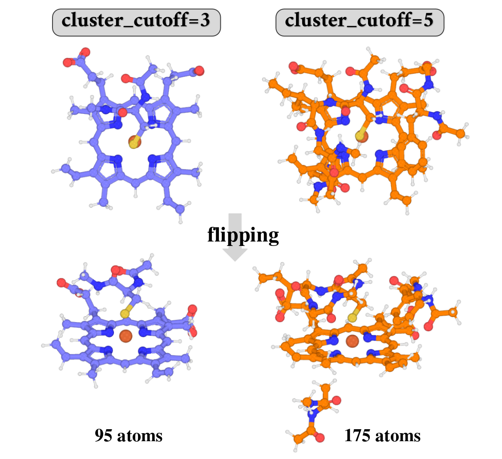

MetalAA Tutorial
Overview
This tutorial walks through the MetalAA route of parmfit(method=metalaa) in three cases on a cytochrome P450 BM3 pentamutant (Protein Data Bank ID 4ZF6), in which the heme iron is coordinated by four porphyrin nitrogen atoms and the thiolate sulfur of a proximal cysteine. The input structure 4ZF6.pdb places the Fe ion at A462, the heme cofactor at A461, and the coordinating cysteine at _400. Case 1 declares the site and builds it with default cutoffs; Case 2 widens the environment around the unchanged site; Case 3 declares a standard amino acid for deliberate rebuilding, builds its template with the residue-build components of the NCAA (noncanonical amino acid) route, and carries the result into the deployment. Every excerpt below is taken from verified runs of the inputs shown here (MetalAA1–3.inp plus their sidecar configs).

Every run writes a <base>.parmfitrun.in file next to the output that echoes your configuration with defaults filled in; watch the log for Unknown left-hand warnings, which flag keys that no builder consumed. The reference definition of every key lives in the MetalAA manual page and the shared sections of the ParmFit hub; software and input requirements are summarized in the hub's Requirements section.
Example Files
A linked file name on this page opens the original file from the verified runs, hosted in the MAPLE-Tutorial repository; every input and output file is linked where it is used in the cases below. Save the input files of one case into one folder; Case 1 starts from MetalAA1.inp.
The complete run archive, including every _work/ directory, is on Zenodo: 10.5281/zenodo.23126309. It has one zip per case — Case1.zip (54 MB), Case2.zip (153 MB), and Case3.zip (156 MB) — and each unpacks to a folder of the same name. The Refinement and NCAA archives use the same zip names, so keep each tutorial in its own folder.
Software. Every case needs AmberTools and Gaussian 16 on PATH: MetalAA always derives the site charges by RESP — Gaussian evaluates the ESP — even with iqm=false — see the hub's Requirements and QM Reference sections.
Case 1 — The basic input: parameterizing the Fe–heme site
Goal. Parameterize the Fe site with the metal ion and its heme cofactor declared explicitly and every cutoff left at its default: donor detection at 2.7 Å, environment at 3.0 Å. Charges come from RESP (restrained electrostatic potential) at PBE1PBE/def2SV with the default chgmod=1, and bonded terms from seminario rather than the default mseminario. The split-valence def2SV basis is a deliberate step down from the manual's PBE1PBE/def2SVP default — it keeps the RESP job on the 95-atom large model affordable.
Input. MetalAA configs tend to list many keys, so the example uses a sidecar config file referenced with input= from the very first case; the method itself stays in the inline #parmfit(...) header. ion_resids selects the central ion, and lig_resids/lig_charges declare the heme as a cofactor built as a small molecule.
#model=uma(size=uma-s-1p1)
#parmfit(method=metalaa,input=MetalAA1.in)
#device=gpu0
PDB 4ZF6.pdbMetalAA1.in
# MetalAA route settings; declare method=metalaa in #parmfit(...) and reference this file via input=
# Only non-default entries are listed; the generated parmfitrun.in shows every resolved value.
ion_resids=A462
ion_charges=3
ion_mults=6
lig_resids=A461
lig_charges=-4
bonded=seminario
chg_level=PBE1PBE/def2SVRun. In the folder that holds MetalAA1.inp, MetalAA1.in, and 4ZF6.pdb:
maple MetalAA1.inp MetalAA1.out # or simply: maple MetalAA1.inpThe second argument names the log; without it, MAPLE derives the log name from the input, so both forms write MetalAA1.out. The run also writes the resolved configuration MetalAA1.parmfitrun.in and the work directory MetalAA1_work/. A run has finished normally when the result block reads Status: completed and the log ends with a TOTAL RUN TIME line; on the tutorial hardware Case 1 takes about 33 min.
What happens.
- Site recognition. Template graph-matching flags the heme as the one unmatched residue — seemingly not protein, with a hint to declare it, which the
lig_residsdeclaration above already handles. Donor atoms are detected among N, O, S, P, Se, and halogens withindonor_cutoff: the cysteine SG and the four heme nitrogens. The ion plus donor residues form the core. - Large model. Environment residues within
cluster_cutoffare collected into a 95-atom model; broken peptide boundaries are sealed with ACE/NME (acetyl/N-methylamide) caps and sequence gaps with Gly bridges. - Ligand build. The declared heme is typed and charged in
lig/HEM461/through antechamber (defaultlig_chgfit=abcg2, which runs an internal sqm job) and parmchk2, producingHEM461.mol2andHEM461.frcmod. - MLIP optimization. The large model relaxes with the MLIP (machine-learned interatomic potential); its net charge is computed as
Q_large = ion_charges + Σ net charges of all other residues— here-2, with multiplicity 6. - RESP. Gaussian evaluates the large-model ESP (electrostatic potential); AmberTools performs the two-stage RESP fitting, with backbone heavy atoms fixed to Amber references (
chgmod=1). - Site model. The core-only model receives the projected charges; residues are renamed to export codes (CYM→CM1, HEM→HM1, FE→FE1) and coordinating atoms are retyped: donors receive
Z1/Z2/..., the metalM1. - Bonded fit and deployment. An MLIP Hessian + Seminario fit the metal-related bond/angle terms; the final frcmod and tleap files are written and validated.
Charge ledger. The large-model charge of −2 adds up from the declared and matched residues:
| Residue | Charge | Source |
|---|---|---|
A462 Fe | +3 | ion_charges=3: Fe(III) |
A461 HEM | −4 | lig_charges=-4: porphyrin dianion (−2) plus two deprotonated propionates (−1 each); the heme in 4ZF6.pdb carries 30 H and no carboxylic H |
_400 CYM | −1 | Matched template: the thiolate bound to Fe |
| ACE/NME caps | 0 | Neutral caps that seal the large model |
| Large model | −2 | Banner: large model charge/mult: -2 6; the multiplicity 6 of high-spin Fe(III) comes from ion_mults=6 |
The run also prints a hint about charge elsewhere in the protein:
Warnings:
Potentially charged standard residues within 8 Å of the metal but outside the large model: _398:ARGThe hint is a near-field check: residues within cluster_cutoff are already in the large model with net-charge group constraints, so the reminder names only potentially charged standard residues in the near field — within 8 Å of the metal but outside the large model. Here that is exactly one residue, ARG398. Treat it as a prompt to check the charge model, not as the list of residues that a wider cutoff would add (Case 2 shows those).
The resolved configuration. Next to MetalAA1.out, MAPLE writes MetalAA1.parmfitrun.in:
# parmfitrun.in - resolved parmfit configuration for method=metalaa
# Generated by MAPLE parmfit; values are the user config entries with defaults filled in.
# This file is itself a valid parmfit config and can be referenced via input=.
# metal ion residue selector (chain+resseq or resname+resseq)
ion_resids = A462
# coordinating ligand residue selectors
lig_resids = A461
# (ff14SB, ff19SB)
pro_ff = ff14SB
# (mseminario, seminario, none)
bonded = seminario
# (0-3)
chgmod = 1
# charge level METHOD/BASIS (engine syntax)
chg_level = PBE1PBE/def2SV
... (open the real file after a run to see every resolved key)Reading the output. The header prints the full site configuration — verify the cutoffs, the ion charge, and the computed large-model charge before anything else:
======================================================================
Parmfit MetalAA
======================================================================
Target: A462:FE (ion)
PDB residue templates: matched=460, backbone_only=0, unmatched=1
not matched (seemingly not protein): A461:HEM
declare them via lig_resids (or ncaa_resids) to build parameters as small molecules
ion_resids: A462
add_resid: []
cluster_cutoff: 3.00 A
donor_cutoff: 2.70 A
water ff: tip3p
protein ff: ff14SB
ion ff: 12_6
ion_charges: 3
ion_mults: 6
ncaa_resids: []
large model charge/mult: -2 6
chgmod: 1
fixchg_resids: []
QM method: PBE1PBE/def2SV
[MetalAA] large-model input written.
[MetalAA] MLIP large-model optimization ...
[MetalAA] large-model RESP ...
[MetalAA] site files written.
[MetalAA] MLIP Hessian + Seminario + final frcmod ...
[MetalAA] final parameter files written.
[MetalAA] running tleap validation ...
[MetalAA] route completed; final summary follows.The result block lists the site products, the renamed atom types, the timings, and the deployment command:
======================================================================
PARMFIT METALAA RESULT
======================================================================
Status: completed
Route: MetalAA
Target: A462:FE
Protein ff: ff14SB
Ions charge: 3
Large model charge/mult: -2 6
Core residues: _400:CYM, A461:HEM, A462:FE
Main products:
final frcmod: MetalAA1_work/MetalAA1_metal.frcmod
tleap input: MetalAA1_work/MetalAA1_metal_tleap.in
tleap PDB: MetalAA1_work/MetalAA1_metal_tleap.pdb
mol2 files: MetalAA1_work/CM1.mol2, MetalAA1_work/HM1.mol2, MetalAA1_work/FE1.mol2
Renamed atom types:
residue atom old new charge
_400:CYM SG SH Z1 -0.329172
A461:HEM NA nc Z2 -0.129187
A461:HEM NB nd Z3 -0.181075
A461:HEM ND nc Z4 -0.152740
A461:HEM NC nd Z5 -0.118203
A462:FE FE FE M1 0.439642
Stage timing:
RESP fitting 27m 22s
ligand building 3m 29s
Hessian + Seminario 59s
model optimization 29s
tleap validation 5s
...
Next step:
cd MetalAA1_work
tleap -s -f MetalAA1_metal_tleap.in |tee MetalAA1_metal_tleap.out
Tleap status:
Errors: 0
Warnings: 8
Notes: 1
Z1–Z5 coordinate the Fe (M1).Metal-site parameters. MetalAA1_metal.frcmod holds the fitted terms of the site. Every Fe term is new: no Fe–donor parameters exist before the fit, so there is no “before” value. MAPLE fits the force constants from the MLIP Hessian with the Seminario method (bonded=seminario) and takes r0 and θ0 from the MLIP-optimized model, so r0 agrees with that model by construction. The distances in the input crystal structure are an independent reference, not a validation of the force constants.
| Bond | Atoms | Kb (kcal mol−1 Å−2) | r0 (Å) | In 4ZF6 (Å) |
|---|---|---|---|---|
Z1-M1 | SG (CYM400)–Fe | 80.99 | 2.300 | 2.30 |
Z2-M1 | NA (HEM)–Fe | 50.68 | 2.071 | 2.05 |
Z3-M1 | NB (HEM)–Fe | 51.18 | 2.104 | 2.09 |
Z4-M1 | ND (HEM)–Fe | 55.89 | 2.070 | 2.05 |
Z5-M1 | NC (HEM)–Fe | 49.48 | 2.087 | 2.04 |
| Angle | Atoms | Kθ (kcal mol−1 rad−2) | θ0 (°) |
|---|---|---|---|
Z1-M1-Z2 | SG–Fe–NA | 34.68 | 109.01 |
Z1-M1-Z3 | SG–Fe–NB | 39.16 | 103.01 |
Z1-M1-Z4 | SG–Fe–ND | 40.49 | 107.70 |
Z1-M1-Z5 | SG–Fe–NC | 36.95 | 99.52 |
Z2-M1-Z3 | NA–Fe–NB | 64.29 | 86.89 |
Z2-M1-Z4 | NA–Fe–ND | 65.41 | 85.35 |
Z2-M1-Z5 | NA–Fe–NC | 38.01 | 151.45 |
Z3-M1-Z4 | NB–Fe–ND | 49.96 | 149.20 |
Z3-M1-Z5 | NB–Fe–NC | 52.24 | 85.75 |
Z4-M1-Z5 | ND–Fe–NC | 69.01 | 86.98 |
The file also holds 9 angles of the form X–Z–M1 (for example CT-Z1-M1) and the terms that the retyped donor atoms inherit from their original types (for example CT-Z1).
The tleap warnings. Tleap status counts the warnings of the validation run, logged in MetalAA1_metal_tleap.out; the count is unrelated to the environment hint above. The 8 warnings and the note are:
| tleap message | Cause | Action |
|---|---|---|
One sided connection. Residue (CM1) missing connect0 atom. and … Residue (default_name) missing connect1 atom. | CM1, the renamed Cys400, comes from its own mol2 and carries no chain-connection atoms, so the peptide links on both sides are not made automatically. | None: the tleap input adds both bonds explicitly (bond mol.399.C mol.400.N, bond mol.400.C mol.401.N). |
Converting N-terminal residue name to PDB format: NTHR -> THR (twice) | Saving the dry and the solvated PDB writes the standard terminal names. | None. |
Converting C-terminal residue name to PDB format: CSER -> SER (twice) | The same for the C terminus. | None. |
The unperturbed charge of the unit (-11.000000) is not zero. and the note Ignoring the warning from Unit Checking. | Net charge of the dry system before ions are added. | None for tleap, which adds 11 Na+ next. |
addIons: 1st Ion & target unit have charges of the same sign: | The script also requests Cl− after the Na+ ions have neutralized the unit. | None. |
Checkpoint
Before moving on, confirm: the renamed atom types table lists exactly the intended coordination — here five donors (thiolate SG + four heme nitrogens as Z1–Z5) plus M1; large model charge/mult: -2 6 matches the charge ledger above; Core residues contains exactly CYM, HEM, and FE; lig/HEM461/ holds the cofactor build and metalaa/ the RESP intermediates. The environment hint is one MAPLE warning; the 8 tleap warnings are the ones listed above.
Case 2 — Widening the environment
What changed. This case changes exactly one key: cluster_cutoff goes from the default 3.0 Å to 5.0 Å. Charge fitting should account for the environment around the site. The large model used for the RESP stage keeps every non-water residue within cluster_cutoff of the metal, so the fitted site charges account for the electrostatic influence of those neighbors. The residues that the wider cutoff actually adds are listed below.
The two cutoffs answer different questions. The donor_cutoff setting defines the site: which atoms count as donors, which residues enter the core, which Z types are assigned — that is coordination chemistry. cluster_cutoff only extends the model beyond that core for the charge-fitting and relaxation stages. Case 2 changes only the second of these.
Input. MetalAA2.inp differs from MetalAA1.inp only in input=MetalAA2.in:
#model=uma(size=uma-s-1p1)
#parmfit(method=metalaa,input=MetalAA2.in)
#device=gpu0
PDB 4ZF6.pdbMetalAA2.in is MetalAA1.in plus these lines:
# Wider automatic environment: residues with any atom within 5.0 A of the metal
# join the large model as RESP/MLIP context; core and site model stay unchanged
cluster_cutoff=5.0MetalAA2.in
# MetalAA route settings; declare method=metalaa in #parmfit(...) and reference this file via input=
# Only non-default entries are listed; the generated parmfitrun.in shows every resolved value.
ion_resids=A462
ion_charges=3
ion_mults=6
lig_resids=A461
lig_charges=-4
bonded=seminario
chg_level=PBE1PBE/def2SV
# Wider automatic environment: residues with any atom within 5.0 A of the metal
# join the large model as RESP/MLIP context; core and site model stay unchanged
cluster_cutoff=5.0Run. maple MetalAA2.inp MetalAA2.out, as in Case 1; on the tutorial hardware it takes about 2 h 01 min, and MetalAA2.parmfitrun.in records the one key that separates it from Case 1: cluster_cutoff=5.0.
What happens. The header of MetalAA2.out now reads cluster_cutoff: 5.00 A and the large model grows from 95 to 175 atoms; the core, the site model, and the product list are untouched. The site model is just the core with the caps removed — it exists for export and deployment, while every fitting stage runs in the large model. The cost concentrates in the RESP stage:
MetalAA1 (3.0 A) MetalAA2 (5.0 A)
---------------------------------------------------------------------
large model: 95 atoms large model: 175 atoms
Z1 charge: -0.329172 Z1 charge: -0.332890
Z2 charge: -0.129187 Z2 charge: -0.069716
Z3 charge: -0.181075 Z3 charge: -0.124553
Z4 charge: -0.152740 Z4 charge: -0.115343
Z5 charge: -0.118203 Z5 charge: -0.068541
M1 charge: 0.439642 M1 charge: 0.369515
RESP fitting 27m 22s RESP fitting 1h 44m 56s
ligand building 3m 29s ligand building 10m 17s
Hessian + Seminario 59s Hessian + Seminario 4m 14s
whole run 32m 37s whole run 2h 00m 59s
Core residues: CYM, HEM, FE Core residues: CYM, HEM, FE (unchanged)
cluster_cutoff 3.0 Å (95 atoms) versus 5.0 Å (175 atoms), viewed from above and flipped; widening adds the surrounding environment to the model while the core stays unchanged.What the wider cutoff adds. Comparing the two large models (MetalAA1_work/MetalAA1_metal_large_raw.pdb and MetalAA2_work/MetalAA2_metal_large_raw.pdb), the wider cutoff adds four residues, together with the ACE/NME caps built from their flanking residues 263, 265, 392, 394, and 403:
| Residue | Closest atom to Fe (Å) | Formal charge |
|---|---|---|
| GLY402 | 3.91 | 0 |
| PHE393 | 4.17 | 0 |
| ALA264 | 4.29 | 0 |
| ILE401 | 4.42 | 0 |
All of them are neutral, the large-model charge stays −2, and the residue flagged in Case 1 (ARG398) remains outside the model. The fitted charges barely move: at most 0.06 e for the donors and 0.07 e for Fe. Widening the environment thus has only a small effect on the fit — when you want the environment accounted for, choose cluster_cutoff as your case requires.
The options that change the model act differently:
| Option or message | What it does |
|---|---|
cluster_cutoff | Extends the large model by distance: residues with any atom within the cutoff of the metal join the RESP/MLIP context. The core and the site model do not change. |
add_resid | Forces residues into the core, with or without donor atoms. This changes what is fitted and what is deployed. |
| Environment hint (Case 1) | Names potentially charged standard residues within 8 Å of the metal but outside the large model. |
| 3 Å vs 5 Å comparison | Lists the residues actually added and how the site charges respond, so you can weigh sensitivity against cost. |
Checkpoint
cluster_cutoff controls context only. With automatic selection, a residue in the core has donated an atom within donor_cutoff — that is coordination chemistry, not something the cluster cutoff controls; add_resid can also put residues without donors into the core. Weigh the near-quadrupled RESP cost against how little the site charges actually moved — here at most 0.07 e, although every added residue is neutral.
Case 3 — Handling an NCAA in the metalloprotein
ILE401 is a standard residue with an Amber template; it is rebuilt here only to show how an NCAA declaration reaches the deployment, and in real work you normally declare only residues that need it.
What changed. The addition on top of Case 2 is an NCAA declaration: with ncaa_resids=ILE401, a standard amino acid — ILE, renamed ILE→ILM on export — is rebuilt with the residue-build components of the NCAA route, and its fitted charges freeze into the site RESP. Bold lines are new in this case.
Input. MetalAA3.inp differs from MetalAA2.inp only in input=MetalAA3.in:
#model=uma(size=uma-s-1p1)
#parmfit(method=metalaa,input=MetalAA3.in)
#device=gpu0
PDB 4ZF6.pdbMetalAA3.in is MetalAA2.in plus these lines:
# ILE401 (axial-loop heme-pocket neighbor) built through the native NCAA flow and renamed ILE->ILM;
# its charges are frozen into the site RESP
ncaa_resids=ILE401
ncaa_charges=0
ncaa_resnames=ILM
ncaa_mults=1MetalAA3.in
# MetalAA route settings; declare method=metalaa in #parmfit(...) and reference this file via input=
# Only non-default entries are listed; the generated parmfitrun.in shows every resolved value.
ion_resids=A462
ion_charges=3
ion_mults=6
lig_resids=A461
lig_charges=-4
bonded=seminario
chg_level=PBE1PBE/def2SV
# Wider automatic environment: residues with any atom within 5.0 A of the metal
# join the large model as RESP/MLIP context; core and site model stay unchanged
cluster_cutoff=5.0
# ILE401 (axial-loop heme-pocket neighbor) built through the native NCAA flow and renamed ILE->ILM;
# its charges are frozen into the site RESP
ncaa_resids=ILE401
ncaa_charges=0
ncaa_resnames=ILM
ncaa_mults=1Run. maple MetalAA3.inp MetalAA3.out, as in Case 1; on the tutorial hardware it takes about 1 h 04 min, and MetalAA3.parmfitrun.in resolves the NCAA declaration into its full block: ncaa_resids=ILE401, charge 0, exported name ILM, and the charge-route keys.
What happens. The NCAA declaration tells MetalAA to build a fresh reference template for a site-adjacent residue: a capped model of ILE401 is optimized, Gaussian evaluates its ESP, AmberTools runs the two-stage RESP, and the fitted charges are frozen into the site charge problem. This build reuses the residue-build components of the NCAA route but is lighter than the standalone NCAA route: it optimizes one capped conformer instead of the α/β pair, fits RESP on that single conformer, and builds the template with antechamber and parmchk2 only — with no Hessian/mSeminario refinement and no TorsionFit. The intermediates land in MetalAA3_work/ncaa/ILE401/ (MetalAA3_capped.mol2, the ESP job, resp1/resp2 outputs, ILM.mol2, ILM.frcmod), and the banner gains the declaration: ncaa_resids: ['ILE401']. Because ILE401 does not coordinate the metal, it does not enter the core — the result block still reports Core residues: _400:CYM, A461:HEM, A462:FE. The template surfaces in the deployment instead: the tleap input MetalAA3_metal_tleap.in now loads ILM.mol2 and ILM.frcmod alongside the site files, and the processed PDB carries ILM at residue 401.
In MetalAA3.out, the banner registers the declaration, the stage timing gives the build its own entry, and the tleap status comes back clean:
ncaa_resids: ['ILE401']
...
ncaa building 7s
...
Errors: 0MetalAA3_work/MetalAA3_metal_tleap.in MetalAA3_work/MetalAA3_metal_tleap.pdb
--------------------------------------- ---------------------------------------
addAtomTypes { ATOM 6405 N ILM A 401
{ "Z1" "S" "sp3" } ATOM 6406 CA ILM A 401
{ "Z2" "N" "sp3" } ATOM 6407 C ILM A 401
{ "Z3" "N" "sp3" } ATOM 6408 O ILM A 401
{ "Z4" "N" "sp3" } ATOM 6409 CB ILM A 401
{ "Z5" "N" "sp3" } ATOM 6410 CG1 ILM A 401
{ "M1" "Fe" "sp3" } ...
} ...
CM1 = loadmol2 CM1.mol2
HM1 = loadmol2 HM1.mol2
FE1 = loadmol2 FE1.mol2
ILM = loadmol2 ILM.mol2
loadamberparams frcmod.ions234lm_126_tip3p
loadamberparams MetalAA3_metal.frcmod
loadamberparams ILM.frcmod
mol = loadpdb MetalAA3_metal_tleap.pdb
bond mol.461.NA mol.462.FE
... (4 more coordination bonds)
bond mol.399.C mol.400.N # backbone repair
bond mol.400.C mol.401.N # backbone repair
bond mol.401.C mol.402.N # backbone repair
savepdb mol MetalAA3_metal_tleap_dry.pdb
solvatebox mol TIP3PBOX 10.0
...Checkpoint
ILE401 is absent from Core residues yet appears as ILM at residue 401 in the tleap PDB; ILM = loadmol2 ILM.mol2 and the ILM and metal-site loadamberparams lines are both present in the tleap input; tleap reports Errors: 0. Use NCAA declarations only for residues you genuinely want rebuilt — coordinating non-protein species belong in lig_resids, and plain standard residues never need declaring unless you deliberately want them rebuilt, as ILE401 is here.
Where to Go Next
The deployment is validated for you: the route ran tleap itself and reported Errors: 0, and the charge ledger above closes to −2. Take the solvated topology into your simulation after reading its warnings; the manual has the charge-convention details.
- MetalAA manual — parameter reference, charge convention,
chgmodtable, and limits. - ChargeFit and the QM (quantum-mechanical) reference on the ParmFit hub — the stages these routes share, documented once on the hub.
- NCAA tutorial — the standalone NCAA route; this tutorial’s Case 3 rebuilds ILE401 into ILM with the NCAA route’s residue-build components, a lighter build than the standalone route. Refinement tutorial — the small-molecule route.
- Example files and run archive. See Example Files for the hosted files and the complete Zenodo archive.